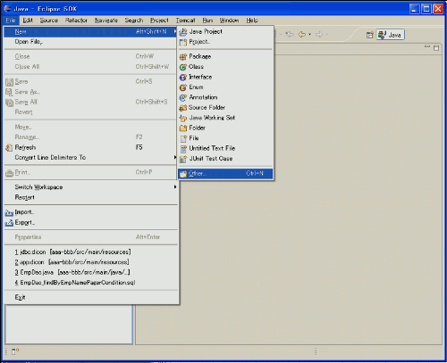
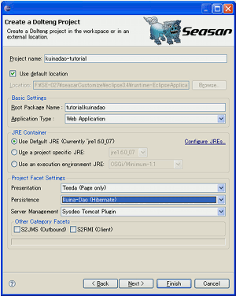
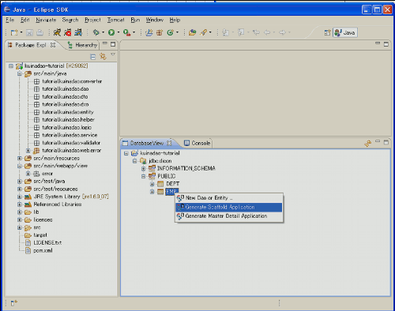
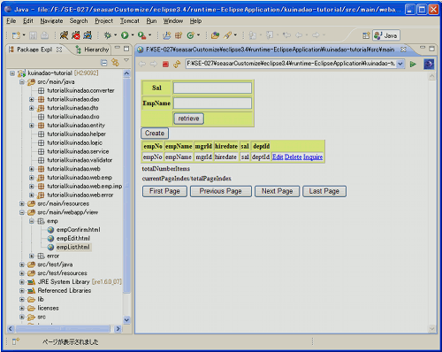
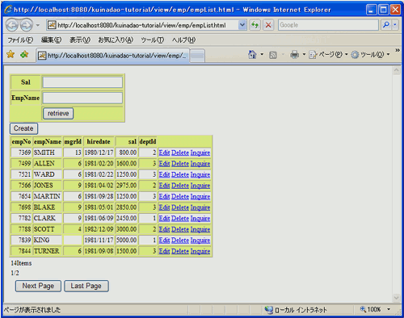

How to use Scaffold Teeda + Kuina-Dao
概要
DoltengのScaffold機能は、あるテーブルに対するCRUD(Create Read Update Delete)処理を行うアプリケーションを自動生成します。
Scaffold Teeda + Kuina-Dao の使い方
Eclipseの「File」-「New」-「Other」を選択します。
「Dolteng」のカテゴリから「Dolteng Project」を選択します。

Project name及びRoot Package nameを入力します。 また、Presentation に「Teeda（Page only）」、Persistence に「Kuina-Dao (Hibernate)」、Server Management に「Sysdeo Tomcat Plugin」を選択します。 選択後「Finish」ボタンを押下し、プロジェクトを生成します。
生成されたプロジェクトにて、H2 Database を起動します。 次に、DatabaseViewから EMPテーブルを右クリックし、「Generate Scaffold Application」を選択します。
Scaffold Typeに「Teeda + Kuina-Dao」を選択し、ダイアログ下部に表示されている「EMP Retrieval Condition」に表示されているリストから検索条件を選択します。例えば、「SAL」と「EMP_NAME」を選択します。 次に、OKボタンを押下することで、アプリケーションを生成します。 ここで、検索条件を指定しなかった場合は、検索条件やページ移動のコードは生成されません。

検索条件とページ移動の機能が、一覧検索ページに実装されています。
生成した一覧検索ページを「Dolteng」-「View on Server」にて起動すると、 一覧検索ページが表示されます。
